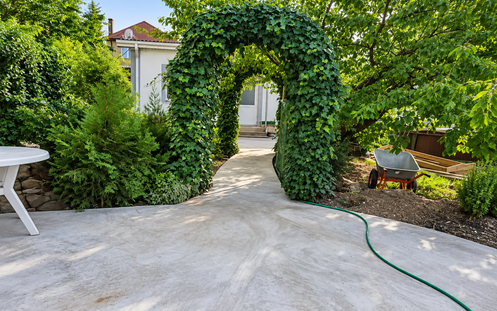

01
Пешеходные зоны и отмостка
Идеально для садовых дорожек, зон отдыха и отмостки вокруг дома. Подготавливаем уплотнённое основание и заливаем бетон толщиной 10 см с лёгким армированием. Отмостку делаем с правильным уклоном — это защищает фундамент от дождевых и талых вод.
